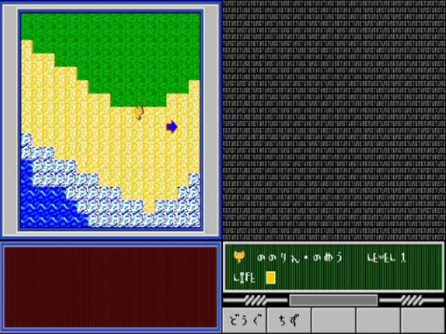
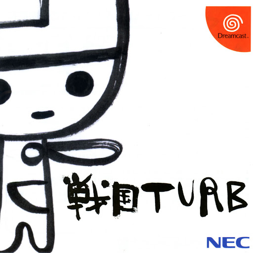
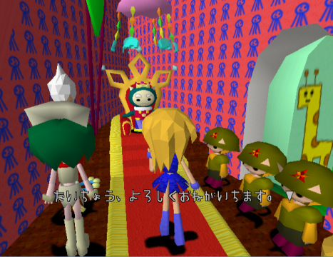
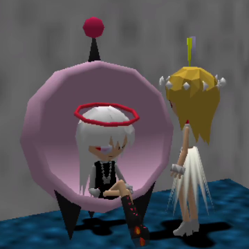

Sengoku TURB is a (currently) untranslated action JRPG on the Dreamcast, developed by QNEP and published by NEC Home Electronics. It never left Japan and I don't speak Japanese,
so I can't say for sure how much impact it had at the time, but seems to at least be big enough to have it's own JP
Wikipedia page. Regardless, the game intrigues a lot of people in the English speaking world (me and like 3 other people). Let's run through some history.
Bio_100%
Bio_100% was (is?) a doujin game circle that developed shareware games for the PC-98. Among their numerous releases, a few games concern Sengoku TURB in particlar.
"TURB" is a series of bite sized RPGs that released in 3 episodes. You can play as a little cat, and I honestly can't find out much more than that. It's hard to find any videos or screenshots of these games. But I did
find an archive(?) of these games on thiswebsitehere.I can't 100% verify whether this site is safe or not, so download at your own risk. If it means anything,
I can't even get the games to boot. I have 0 knowledge of DOS and PC-98 emulation.

After presumable success, a spinoff of the TURB games was released. This spinoff was called "Sengoku TURB", a name it shares with the Dreamcast game.
On this site, this version of the game will always be refered to as "Sengoku TURB PC-98" to avoid confusion. This game is a lot easier to find info and videos of.
Here's a video of a guy playing Sengoku TURB PC-98 on Nico Nico Douga:
As with the TURB games, I found this game archived on the same sketchy site. I had no luck getting this one to boot either.
The Dreamcast TURB

On January 14th, 1999, Sengoku TURB was released for the Dreamcast, only in Japan. This game was developed by qnep, a development team mostly consisting of Bio_100% members. Sengoku TURB (Dreamcast) is an action RPG that
appeals to a very specific low poly aesthetic that I (and many others) find really charming.
In Sengoku TURB, you play as Jino-chan, a human who crashlands on Raiyon (the setting of the game). Jino-chan is immediately led to the Cat King, who informs her that Raiyon is currently in a warring states-esque scenario,
with cat and sheep armies battling it out. Apparently, the sheep army invited some cat soldiers to a party, but they never returned. Later, they sent the cat army burgers made of cat meat. Jino-chan decides to join
up with the cat army because the sheep army seems pretty messed up, and begins her journey.


Along the way, Jino-chan runs into a cast of colorful characters. Nanoray, Molina, and Gertrude have some of my favorite designs. Fun fact, the character designs were (at least partially) done by Yoko Kuroyanagi,
the same woman that did many of the early tamagotchi!
The OTHER Dreamcast TURB
After Sengoku TURB came out, qnep got to work on a follow up game. Sengoku TURB: Fanfan I love me Dunce-doublentendre (here on refered to as Sengoku TURB F.I.D.). Sengoku TURB F.I.D. is an anomaly, because it kinda isn't a "game"
like the previous release. Rather, F.I.D. is more like a fan disk full of bonus content and minigames.
Included is Episode 0, a prequel to Sengoku TURB, where you play as Gertrude. It's only 20 stages, but it plays the same as the first game, and I think it's really cool.
Other cool stuff that F.I.D. includes is a racing minigame, a shumup minigame, fanart, concept art, and a ton of other miscellaneous goodies. It's a really neat fan disk, and I really reccomend giving it a peak if the
aethetics of TURB appeal to you.
Finally, Smug posteda fewguides to help english players understand enough to actually PLAY Sengoku TURB. I used these a lot in my own playthrough!
All of these projects are really cool. I really appreciate the work that these people are putting in to make the game understandable to english speaking audiences.